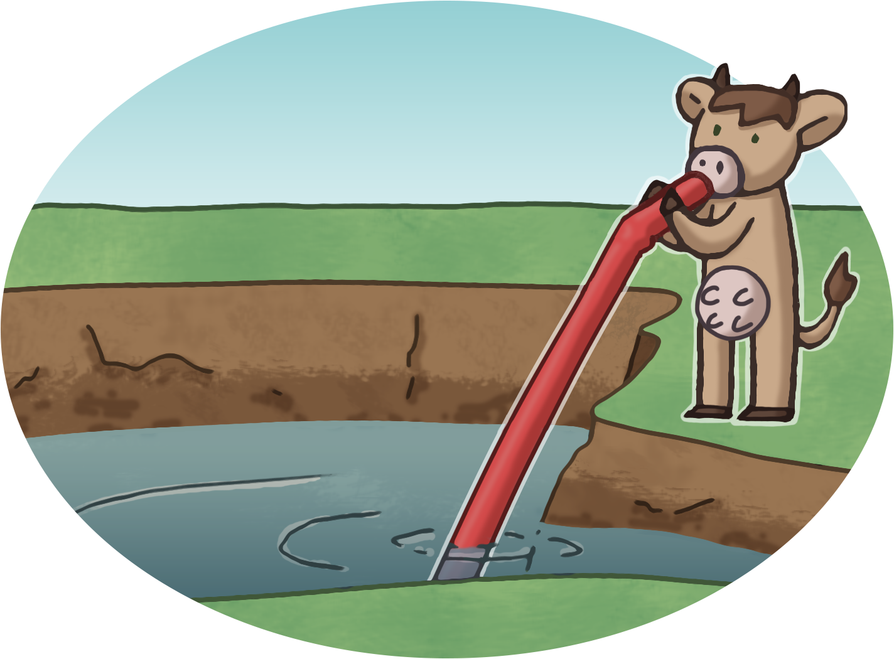
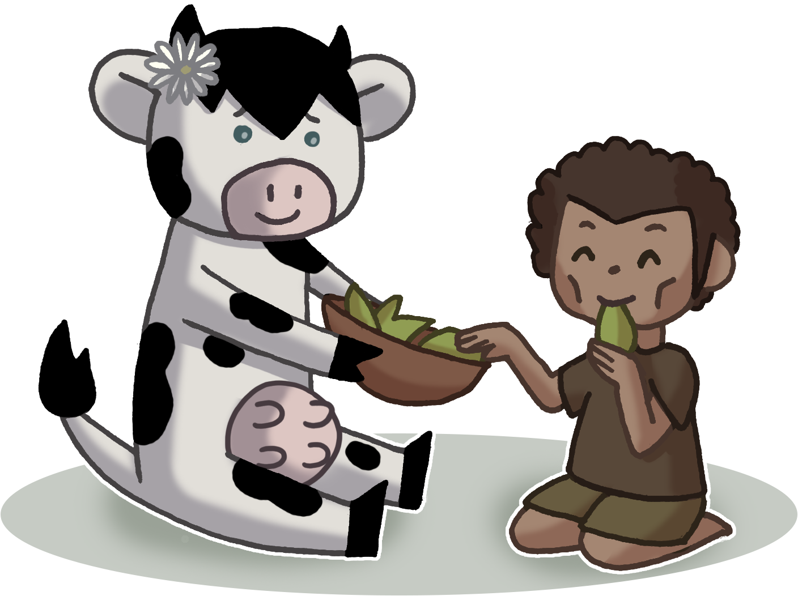

Problématiques
La consommation de viande engendre un gaspillage des ressources, de la pollution, des problèmes de santé et de la souffrance animale. Marguerite et Gretta vont donc mener l'enquête afin de comprendre quels sont les problèmes liés à la consommation de viande. C'est parti !
Un gaspillage de ressources
Que faut-il pour produire de la viande ?
Pour produire de la viande, les ressources suivantes sont nécessaires:
- Un espace pour faire vivre l'animal.
- De quoi nourrir l'animal, ce qui implique de faire pousser des plantes, les arroser et les récolter.
- De l'eau pour abreuver l'animal et en prendre soin (pour le laver et pour nettoyer son enclos, les machines, les ateliers lors de la préparation de la viande, etc.).
Elles dépendent évidemment du type de viande que l'on souhaite produire et selon quelles conditions. Néanmoins, on peut catégoriser les besoins d'un animal en deux aspects:
-
Les besoins en surface agricole
On élève en moyenne un grand bovin et demi de 600kg par hectare. Cela représente une bête pour l'équivalent d'un terrain de foot. Sachant que la viande consommable ne représente que 37% de l’animal, on obtient une productivité de 333kg par grand bovin par hectare. En comparaison, un hectare de soja produit trois tonnes et contient 50% de plus de protéines que la viande de bœuf. -
Les besoins en eau
Pour un kg de rôti de bœuf, il faut 100'000 litres d’eau. Pour produire un seul hamburger de 125g, presque 13'000 litres d’eau potable sont nécessaires. 15'400 litres sont nécessaire pour produire 1 kg de viande de bœuf, 6'000 litres pour 1kg de porc contre 1600 litres pour 1 kg de céréales.”
En moyenne, une personne vivant dans un pays industrialisé consomme chaque année 1’200m³ pour la production de ses aliments. Les régions consommant le plus de viande utilisent 1800m³ d’eau par an et par personne. Dans les pays les plus pauvres, cette consommation se situe autour de 600m³ par an car ils consomment beaucoup moins de viande. En effet, actuellement dans les pays industrialisés, la part d’origine animale dans l’alimentation tourne autour des 30 à 35%. Par contre, si l’alimentation d’une personne se compose à 80% de végétaux et à 20% de viande, il ne faut que 1’300m³ d’eau par an. Cette quantité est encore divisée par deux pour une alimentation purement végétale.

La viande consomme énormément de ressources pour un retour faible. En effet, pour faire un kilo de viande de boeuf dans un système d'élevage conventionnel, il est nécessaire d'utiliser:
- Un espace de 323 m² afin qu'il puisse vivre
- De 15'400 litres d'eau (quantité cumulée pour la production du fourrage, pour abreuver l'animal et son entretien)
Par contre, si l'on prend les végétaux, on peut faire pousser beaucoup plus par m² pour une consommation réduite en eau. Pour produire un kilo de soja dans un système d'agriculture conventionnel, il est nécessaire d'utiliser:
- Un espace de 6 m² afin de faire pousser la plante.
- De 400 litres d'eau (quantité cumulée pour sa production et son entretien)
Il semble évident que la viande est ainsi l'aliment qui consomme le plus de ressources et s'en préoccuper permettrait d'utiliser celles-ci pour des aliments ayant des besoins moins élevés.
Comparateur
Amuse toi avec les images interactives ci-dessous. Passe la souris sur les dessins afin d'avoir d'afficher des éléments plus détaillés.
Une surprise est cachée dans chacune des images interactives, tu trouveras peut-être de quoi il s'agit ! Active le son, cela peut t'aider :)
Note: le score de chaque aliment est basé sur les besoins en eau et en surface pour produire 1kg de l'aliment. Les détails du calcul sont les suivants:
En effet, un aliment ayant besoin à la fois de beaucoup d'eau et de beaucoup de surface se vera attribuer un score faible. Au contraire, un aliment nécessitant peu d'eau et peu de surface se vera attribuer un score élevé !
L'écologie
Nous produisons toute cette viande, mais à quel prix pour l'environnement ?
Les pesticides
Les pesticides dans la production de viande semble être un paradoxe. Pourtant, il est nécessaire de nourrir ces animaux avec du fourrage. Les ravages des végétaux (maladies, parasites, champignons, etc.) sont éliminées, dans une agriculture conventionnelle, à l'aide de pesticides. Ceux-ci tuent la biodiversité et s'infiltrent dans le sol, ce qui a pour effet de rendre les sol moins productifs et polluent les nappes phréatiques.
La pollution des eaux
Selon l'Organisation des Nations unies pour l'agriculture (FAO), l'élevage est la plus grande source polluante des eaux, principalement à cause des défections d'animaux, des produits chimiques, des engrais et des pesticides utilisées pour les cultures fourragères.
La gestion des déjections dans les élevages intensifs provoque des infiltrations de nitrates et agents pathogènes dans les nappes phréatiques qui mettent en péril les réserves d'eau potable, la faune et la flore. En effet, l'accumulation dans l'eau des nitrates, du phosphore et autres nutriments est responsable de la prolifération des algues vertes et de la dégénération des récifs coralliens.
Les émissions d'ammoniac à 95% d'origine agricole, dont 80% de l'élevage, sont la principale cause des pluies acides. Il s'agit d'une acidification de l'eau et à pour effet de perturber la photosynthèse des plantes et détruit les éléments nutritifs du sol, cause du dépérissement forestier. Les lacs, fleuves et ruisseaux sont également concernés par ces pluies acides. On constate une réduction et une disparition d'espèces aquatiques sensibles aux changements du pH.
La déforestation
D'après une enquête menée pendant trois ans en 2009 par Greenpeace, l'élevage bovin serait responsable de 80% de la déforestation amazonienne,
soit 14% de la déforestation à l'échelle mondiale. La forêt amazonienne représente à elle seule la moitié des forêts tropicales restantes sur la planète. Elle est la forêt la plus grande mais également celle avec la plus grande biodiversité.
Le commerce de la viande est alors le moteur de déforestation le plus important au monde.
Toujours selon le rapport de 2006 de l'Organisation des Nations unies pour l'alimentation et l'agriculture (FAO), 70% des terres qui étaient boisées dans le passé, et 91% des terres déboisées depuis 1970, sont utilisées pour les ranches (structure destinées principalement à l'élevage extensif) des bovins.
L'effet de serre
En 2013 des chiffres issus de l'Organisation des Nations unies pour l'alimentation et l'agriculture (FAO) établissent un taux participatif de 14.5% d'émission de gaz à effet de serre d'origine humaine, dont 8.8% pour les bovins.
Le 5ème rapport du Groupe d'experts intergouvernemental sur l'évolution du climat (GIEC), estime qu'il serait possible de réduire de 36% les émissions de gaz à effet de serre d'origine agricole et de 8% les émissions totales, en appliquant simplement les recommandations nutritionnelles de la Harvard Medical School. Soit, en limitant sa consommation hebdomadaire à 70g pour la viande de ruminant et à 560g pour les autres viandes, le poisson et les œufs.
Une étude britannique a évalué que les végétaliens émettait 2.5 fois moins de gaz à effet de serre que les omnivores consommant 100g de viande par jour.
La faim dans le monde
Pourquoi manger de la viande a un impact sur la faim dans le monde ?
L'Organisation des Nations unies pour l'alimentation et l'agriculture (FAO) a mené une étude qui révèle que les animaux sont de mauvaises sources d'énergie en alimentation humaine. Les céréales et le soja sont des denrées hautement nutritives et peuvent être directement consommées par l'homme. Malheureusement une grosse partie de cette production est destinée aux animaux.
- 85% de la production de soja est destinée à l'alimentation animale

La répartition des terres cultivables dans le monde est la suivante:
- 33% des terres cultivables sont destinées à produire l'alimentation des animaux d'élevages.
- 26% de la surface des terres émergées non couvertes par les glaces sont employés pour le pâturage.
- Au total 70% des terres à usages agricoles sont consacrées à l'élevage. Cela représente 30% des terres émergées non couvertes de glace.
Pour produire 1 kg de protéines animales il faut donc plusieurs kg de protéines végétales:
- issues de la viande bovine, il faut 7 kg de protéines végétales, dont 1 kg comestibles par l'homme
- issues de la volaille, il faut 6 kg de protéines végétales, dont 5 kg comestibles par l'homme
- issues des oeufs il faut 3 kg de protéines végétales, dont 2.8 kg comestibles par l'homme
- issues de la viande de porc, il faut 6 kg de protéines végétales, dont 4.4 kg comestibles par l'homme
On peut donc déduire qu'il faut plus de terre pour produire 1 kg de protéines animales que son équivalence végétale.
Mais je ne consomme que *un* hamburger par semaine...
La planète terre ne dispose pas d'une surface infinie de terres cultivables et d'eau. En effet, elle se compose de
- 4.8 milliards d'hectares de surface cultivable
- 170'000 km³ d'eau douce
Comme nous avons vu, la viande consomme beaucoup plus de surface et d'eau pour la même quantité de nourriture que les plantes. Utilise l'infographie suivante pour comprendre le problème !
Même si deux hamburger par semaine peut paraître insignifiant, si tout le monde mange ne serait-ce que deux hamburger par semaine, la planètre n'a pas la capacité de produire tout l'alimentaire nécessaire pour cela... Car il faut aussi penser que tu voudras pas manger juste 2 hambergers par semaine, c'est plus sympa si tu peux aussi prendre des frittes, des légumes, des pattes et manger tous les jours !
Tu remarqueras qu'au contraire, la planète peut subvenir aux besoins en eau et en surface si tout le monde mangeait son hamburger végétarien par semaine.
Dans le rapport de l'Organisation des Nations Unies pour l'alimentation et l'agriculture (FAO), il ressort que 795 millions de personnes dans le monde souffre de malnutrition. Cela entraîne des problèmes de santé, comme la diminution de la résistances aux maladies, la provocation des handicapes physiques et mentaux et accroît la mortalité.
Des économistes britanniques ont mené une expérience. Ils ont estimé le prix des denrées alimentaires en 2030, en se basant sur les résultats de l'année 2000. Ils ont ensuite comparé les résultats avec un scénario où la demande de viande dans les pays développés aurait baissée de 50% par rapport à l'année 2000.
Une des premières constatation qui ressort de cette expérience est une baisse approximative de moitié du prix des aliments d'origines animales.
Suite à cette baisse, le comportement sur la consommation de viande change:
- Une augmentation de 35% de la consommation dans les pays en développement.
- Une diminution de 20% mondiale de la consommation.
La baisse de consommation mondiale de 20% entraîne une baisse des prix sur de nombreux aliments:
- Le prix du manioc et du blé baisse de 7%.
- Le prix des patates douces baisse de 10%.
- Le prix du mais, l'orge, l'avoine et le millet baisse de 20%.
- Le prix des oléagineux (soja, tournesol..) baisse de 21%.
La seconde constatation est qu'une diminution des prix permet au plus démunis de mieux s'alimenter.
Dans les pays en développement, la ration calorique par habitant augmente de 81 calories par personne et par jour. Le nombre d'enfant en bas âge souffrant de malnutrition diminue à 2.2 millions.

Ma santé
Est-ce que cela a un impact sur ma santé ?
Les systèmes industriels de productions se sont standardisés dans les pays développés et se répandent dans le reste du monde. Ces standards autorisent les éleveurs à avoir un nombre important de bétail pour une surface relativement faible, ce qui implique des problèmes sanitaires. En effet, le nombre élevé d'animaux en confinement créé les conditions idéales pour l'apparition et la prolifération de maladies et infections.
Pour parer à ce problème, les élevages consomment énormément d'antibiotiques pour soigner les animaux et cette utilisation massive des antibiotiques favorise le développement de souches bactériennes résistantes, qui se trouvent immunisées contre les antibiotiques et autres médicaments fournis aux animaux. De plus, des hormones sont utilisées afin d'accélérer la croissance des animaux.
Ces additifs posent-ils des problèmes ?
Le directeur adjoint de l'Organisation mondiale de la santé (OMS), Keji Fuguda, estime que mourir des suites d'une infection banale ou blessure mineur pourrait redevenir monnaie courante, à l'horizon 2030, car les infections seront devenues résistantes aux antibiotiques actuels. De même, une étude britannique estime qu'en 2050 les dangers liés à l'antibiorésistance pourraient provoquer la perte annuelle de 10 millions de vies humaines.
L'utilisation excessive d'antibiotiques et d'hormones se retrouvent dans la viande que l'on consomme et peut engendrer des problèmes de santé. La préparation, la surconsommation et la cuisson de viandes préparées, principalement rouge, augmentent le risque des maladies telles que le cancer du côlon, les maladies cardiovasculaires, l'obésité, le diabète de type 2 et, de manière générale, la mortalité. Les viandes transformées ont été classifiés avec certitude par l'Organisation mondiale de la santé (OMS) comme étant cancérigènes et la viande rouge l'est probablement.
Ne vais-je pas avoir de carences ?
Les carences sont souvent évoquées pour les alimentations végétariennes ou végétaliennes. Néanmoins, on retrouve les mêmes nutriments et minéraux dans leur équivalence végétale, voir même plus que la viande pour certains végétaux. L'Académie de Nutrition et de Diététique a établi qu'une alimentation végétarienne / végétalienne bien conçue est bonne pour la santé. Elles peuvent être bénéfiques pour la prévention et le traitement de certaines maladies. Elles sont également appropriées à tout âge, durant la grossesse et l'allaitement, l'enfance et l'adolescence, et également pour les sportifs.
Prenons le cas par exemple de la vitamine B12, souvent citée comme manquante dans l'alimentation végétarienne et végétalienne car elle ne semble se trouver que dans la viande. La vitamine B12 a été synthétisée en 1972 par Robert Burns Woodward et Albert Eschenmoser. En effet, la vitamine B12 n'est produite ni par plantes, ni par les animaux. Seules quelques bactéries et archées ont les enzymes nécessaires à sa biosynthèse. La vitamine B12 n'est présente dans la viande que parce qu'elle est rajoutée dans l'alimentation destinée aux élevages.
La souffrance animale
Comment sont traités les animaux dans ce processus ?
Lors que l'on pense aux animaux de la ferme, nous les imaginons dans les pâturages, dans les prairies ou encore vacants autour de la ferme. La réalité n'est malheureusement pas si idyllique.
Depuis les années 70, afin de subvenir à la demande croissante, les fermes en production conventionnelle n'ont cessé de s'automatiser, de s'agrandir et permettent la gestion d'un nombre très élevé de bêtes.
Afin d'augmenter la rentabilité de production, les animaux sont entassés et, souvent, ne peuvent pas avoir accès à l'extérieur. Ces espaces, incompatibles avec notre vision de la ferme et des besoins nécessaires aux animaux, rendent difficile la cohabitation et la croissance normale des animaux.
Pour exemples,
- 83% des 800 millions de poulets de chair sont élevés sans accès à l'extérieur.
- 68% des 47 millions de poules pondeuses sont élevées en batterie de cages.
- 99% des 36 millions de lapins sont élevés en batterie de cages.
- 95% des 25 millions de cochons sont élevés sur caillebotis en bâtiment
Les bovins sont moins touchés par ce phénomène, mais cela reste tout de même une réalité. Les oeufs de poules, de canards et de dindes éclosent par milliers dans des armoires à incubation. Les animaux sont traités par lots et partagent tous les mêmes caractéristiques et façon de production: naissance, élevage et mort.
Cette concentration d'animaux provoque des problèmes de proximité et des opérations sont pratiquées pour éviter qu'ils se blessent entre eux. L'exemple le plus courant est l'écornage des cornes de vaches. D'autres opérations sont pratiquées sur différentes espèces:
- Épointage des becs
- Dégriffage des pattes des volailles
- Coupe de queue
- Rognage des dents de cochons
- Écornage des veaux
- Castration des porcs, veaux et chapons
De plus, des croisements génétiques sont effectués afin d'obtenir une espèce animale avec les meilleures capacités possibles. On retrouve des exemples de sélections génétiques pour obtenir des caractéristiques spécifiques:
- Les vaches à lait, qui ont été sélectionnées afin de donner plus de lait
- Les vaches à viande, qui ont été sélectionnées afin de produire plus de masse musculaire
- Les poules pondeuses, qui ont été sélectionnées pour pondre plus que la norme
- Les poules à chair, qui ont été sélectionnées pour avoir plus de masse musculaire
La sélection génétique entraîne également des malformations chez les animaux car il n'y a plus assez de diversité génétique. Certains animaux sont poussés à produire une plus grosse masse musculaire au détriment du bon fonctionnement de leurs organes par exemple.
On se voit parfois dans l'obligation de tuer des animaux car ils ne rentrent pas dans les critères. Dans le cas des vaches à lait, les veaux mâles sont souvent tués car ils ne peuvent pas donner de lait. Les poussins mâles dans le cas des poules pondeuses ou encore les oies femelles dans le cas du foi gras sont également tués à la naissance car inadaptés par rapport aux critères de sélection.
Cette sélection, forcée, est extrême: les poules produisent de base environ quinze oeufs par année. Dans les fermes et leurs conditions actuelles, elles en produisent jusqu'à 300 par année et s'en retrouvent rapidement épuisées. Leur courte vie est abrégée car elles ne sont plus productives. De plus, une vache doit avoir mis au monde un veau avant de commencer à produire du lait. C'est la raison pour laquelle on les insémine et, lorsque le veau arrive, il est rapidement séparé de la mère pour qu'elle puisse être remise au travail. Le veau n'aura quasi pas accès au lait de sa mère et c'est la raison pour laquelle la viande de veau est très blanche car celui-ci est carencé. Cette séparation affecte autant la mère que le petit.
De nombreuses vidéos circulent sur Internet montrant les conditions dans lesquelles les animaux sont élevés. Des réglementations tentent de limiter les souffrances animales et des progrès notables ont été réalisés grâce à certaines réglementations, notamment lors de la mise à mort de l'animal qui doit être la moins violente possible, mais les abus sont toujours présents.
Une consommation croissante
Combien consommons-nous de viande ?
1961 2013
Avec la mondialisation et l'accès toujours de plus en plus facilité aux denrées alimentaires, la consommation de viande n'a cessé d'augmenter depuis la révolution industrielle. Il est important de comprendre que cette tendance est à la hausse et, selon les prévisions pour 2025 de l'Organisation des Nations Unies pour l'alimentation et l'agriculture (FAO), elle n'est pas prête de s'arrêter et, avec elle, tous ses problèmes.